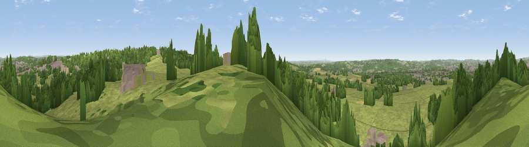

Viewpoint near Meir Heath
#24763 in England · top 33% of its area beats it · near Meir HeathThe view, rendered

A 360° render of this exact spot computed from the terrain model, tree cover and land cover — summer colours, afternoon light, calibrated against photographs of famous viewpoints. Real trees, hedges and buildings will differ in detail.
The panorama
Grey silhouette: terrain skyline in each direction (720 bearings, Earth curvature and refraction included). Dashed green: skyline with trees (+15 m) and buildings (+8 m) as obstacles. Blue strip: how far the ground is visible on each bearing.
Where the view opens
Wedge length = distance to the farthest visible ground on that bearing (vegetation-aware). Rings at 10, 25 and 50 km.
What fills the view
58% grassland · 30% woodland · 9% built-up · 2% cropland
Angular shares of the visible panorama (visual magnitude), not map area. Landscape diversity 0.43 (0–1 Shannon).
Key numbers
More beautiful places nearby
The staircase of upgrades: each row has a higher view potential than everything closer. Driving times are estimates from straight-line distance, calibrated against real road routing — check an actual route before setting out.
| Place | Direction | Drive | Score |
|---|---|---|---|
| Viewpoint near Meir Heath | ENE · 1 km | ~4 min | 54.7 |
| Viewpoint near Oulton | S · 4 km | ~10 min | 55.2 |
| Viewpoint near Beech | WSW · 7 km | ~14 min | 62.1 |
| Viewpoint near Beech | WSW · 7 km | ~14 min | 63.7 |
| Viewpoint near Madeley Heath | WNW · 14 km | ~25 min | 65.4 |
| Bignall Hill | NW · 14 km | ~26 min | 75.2 |
| Viewpoint near Mow Cop | NNW · 18 km | ~31 min | 80.2 |
| Viewpoint near Little Wenlock | SW · 43 km | ~62 min | 84.2 |
52.96113, -2.12687 · source: screening · position refined by local search. Computed location — check access rights before visiting.